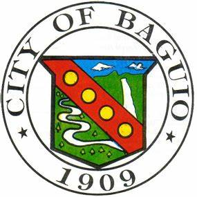
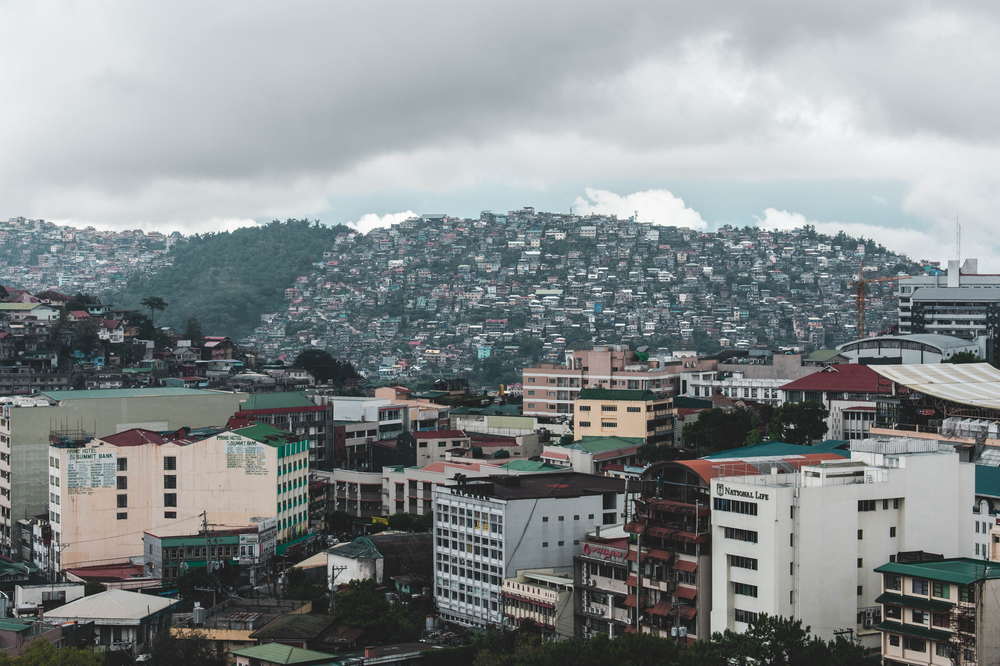
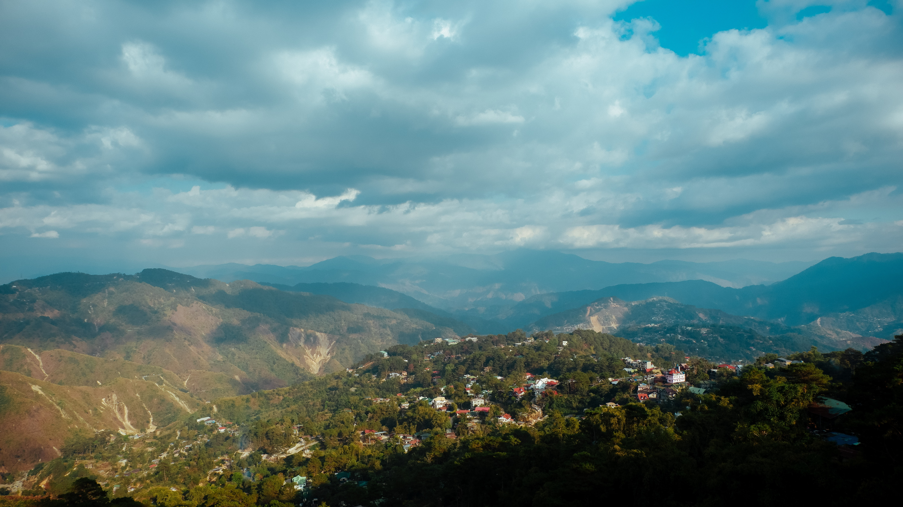
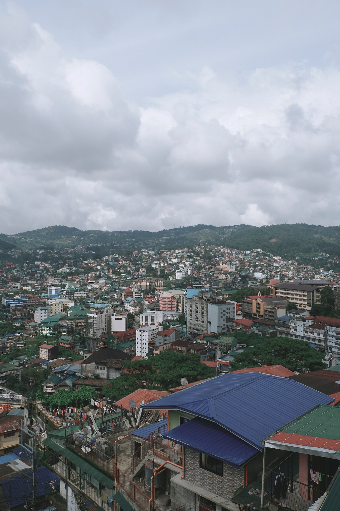
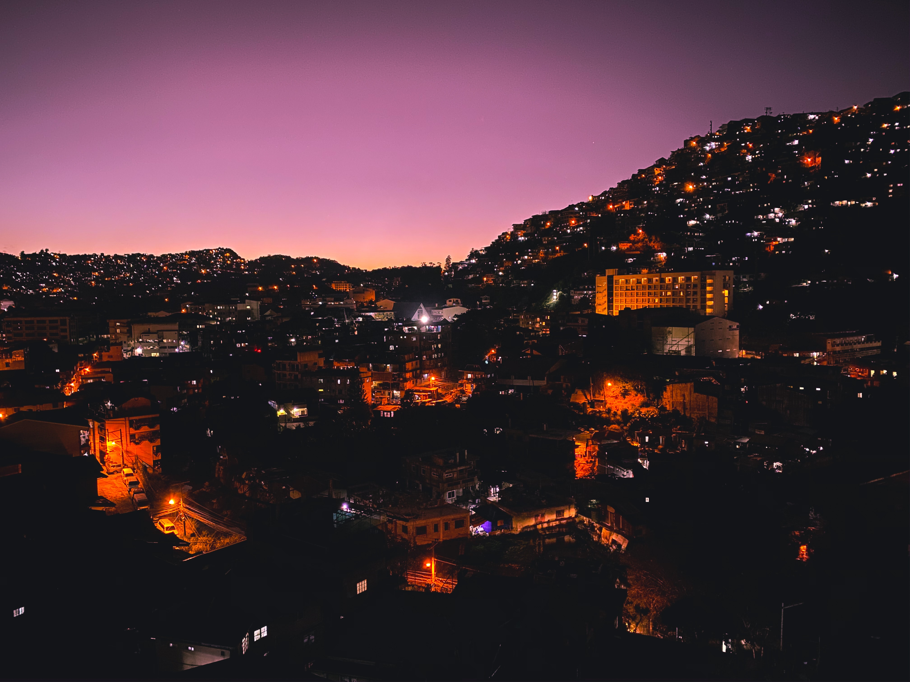

Experience
Below are examples of my experience and qualifications
Projects
Below are some of my projects
About The City

Baguio City is a highly urbanized city located in the province of Benguet in the Cordillera Administrative Region of the Philippines. It is often referred to as the "City of Pines" due to its location in the Cordillera Mountains and its cool climate, which is a welcome respite from the heat and humidity of the lowlands.
Baguio City is known for its scenic beauty and has become a popular tourist destination, thus earning its title as the country's summer capital. Some of the city's most famous landmarks include Burnham Park, Mines View Park, and the Baguio Cathedral. The city is also known for its educational institutions, including the University of the Philippines Baguio and Saint Louis University.
Baguio City has a rich cultural heritage and is home to several indigenous communities, including the Kankana-ey, Ibaloi, and Ilocano people. The city celebrates a number of festivals throughout the year, including the Panagbenga Festival, which is a month-long celebration of flowers held every February. The city is also known for its handicrafts, including woven products, wood carvings, and silver jewelry.
Gallery

PHOTO BY M&W STUDIOS

PHOTO BY JOHAN RICKARDO ROXAS

PHOTO BY CARMELA ASISTIO

PHOTO BY MIO ADVINCULA

PHOTO BY CORNERMONKEY